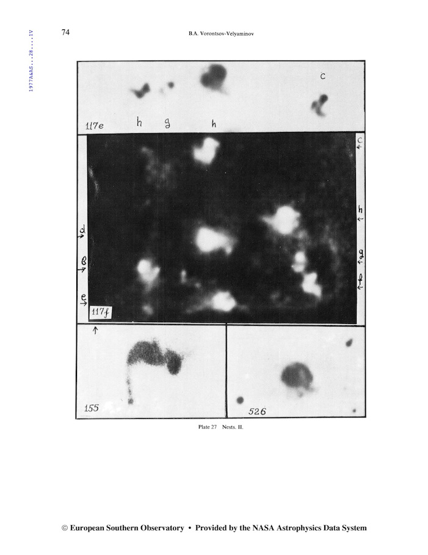
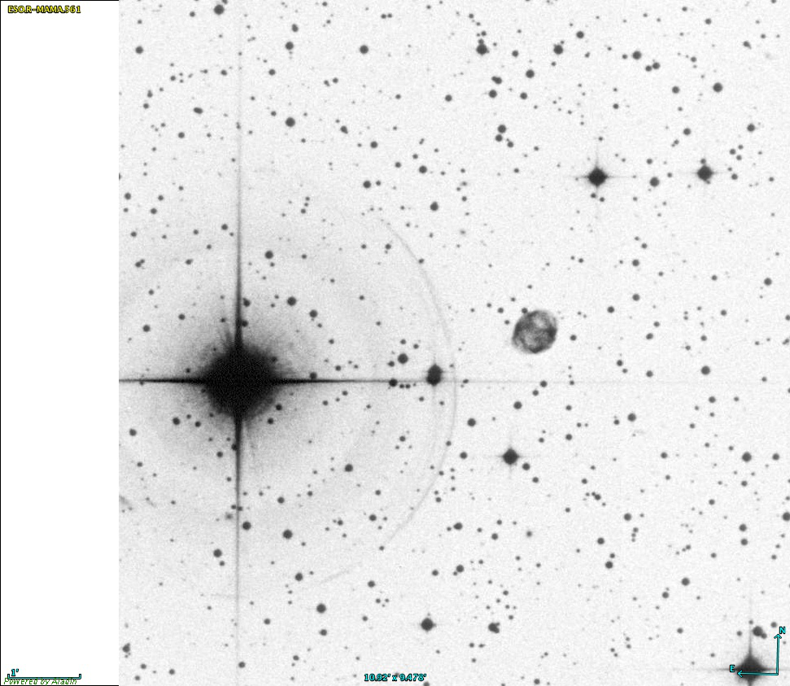

Sanduleak 2-21, a surprising 1975 discovery
- Sa 2-21 = ESO 561-016 = PK 238+7.2 = PN G238.9+07.3
- RA: 08h 08m 44.2s
- DEC: -19° 14' 02"
- Type: Planetary Nebula (elliptical)
- Size: 42"x36"
P.A.: 138° Mag: V ≈ 13.7
Sanduleak 2-21 (Sa 2-21) is a moderately bright planetary that escaped detection (as a planetary) until 1975. It was discovered by Warner & Swasey Observatory astronomer Nicholas Sanduleak on an objective-prism plate taken with the Curtis Schmidt telescope at Cerro Tololo in Chile. It is clearly visible on the POSS, but was overlooked by the time George Abell compiled his famous list of 86 Abell planetaries in 1966 based on the POSS (many were actually found in the 1950's). It was picked up, though, by Russian astronomer Boris Vorontsov-Velyaminov in the 1960's when he compiled the Morphological Catalog of Galaxies (MCG -03-21-004) and as a result also carries the galaxy designation PGC 22854. Even in 1998, the planetary was included in the paper "Accurate positions for MCG galaxies" (1998PASP..110..779C), so its not surprising that some amateur software may plot it as both a galaxy and a planetary. How could this planetary have been missed until 1975? Sanduleak stated "It is easy to see how this otherwise conspicuous object might be overlooked on the blue-sensitive print since it lies only about 4 arc-minutes from the 4th magnitude star 16 Puppis and falls within the halation ring surrounding that bright star." Still, Abell noticed Abell 12, which lies only 1.2 arc-minutes from the 4th magnitude star Mu Orionis, so Sa 2-21 was somewhat of an oversight by Abell and others. Here's an image from ESO's La Silla Observatory in Chile taken in 1984.

Sa 2-21 is a snap to locate, as it's just 4' west of naked-eye 16 Puppis (V = 4.4). I'd suggest using an OIII or narrowband filter as it will dim the bright star and increase contrast with the planetary. In an 8- or 10-inch scope, you'll probably need a filter to observe it, but in larger scopes its faintly visible unfiltered. My first observation was using a 13-inch f/4.5 in February 1985 using a UHC filter. My notes read "fairly
faint, moderately large, slightly elongated ~E-W." With my 18" it's faint but easily visible unfiltered at 150x and quite striking when I add an OIII or NPB filter. I prefer the narrowband NPB filter as it gives an aesthetically more pleasing view with the stars less suppressed. Sa 2-21 appears as a crisply defined, moderately bright oval, 4:3 NW-SE, with a size of ~45"x35". It displays a weak annular appearance with a slightly brighter rim. The planetary forms the northwest vertex of an equilateral triangle with a mag 11 star 1.5' S and a mag 12/12.8 double star at 5" (BRT 1449) 1.5' SE. Images reveal a barrel-shaped planetary with slightly brighter knots at the west and east ends and [N II] images add ring-like features. The 2003 paper by Harman et al: "Morphology, kinematics and modelling of the elliptical planetary nebula Sa 2-21", includes images and [O III] and [N II] models for its morphology. Here's a Pan-STARRS image from Haleakala (Maui).

I usually take a look at Sa 2-21 every couple of years as I enjoy this "late" discovery. If you've never seen it, GIVE IT A GO AND LET US KNOW!